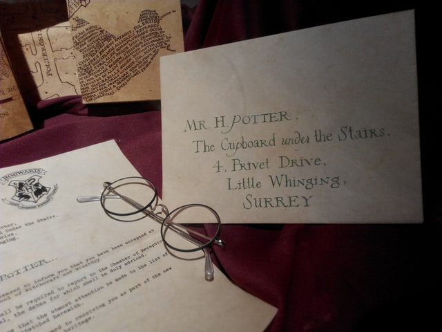
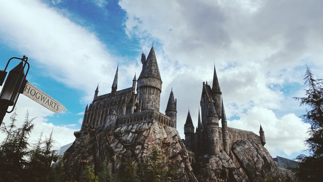

Harry Potter
 Harry Potter, İngiliz yazar J. K. Rowling tarafından yazılan yedi fantastik romandan oluşan seri. Romanlar, Hogwarts Cadılık ve Büyücülük Okulu'nda eğitim gören genç büyücü Harry Potter ile arkadaşları Hermione Granger ve Ron Weasley'in yaşamlarını konu alır.
Konusu
Harry Potter, 10 yıl boyunca hiçbir zaman sevemediği Petunia teyzesi, Vernon eniştesi ve nefret ettiği ahmak kuzeni Dudley ile yaşamak zorunda kalmıştır. Anne ve babasının bir trafik kazasında öldüğünü sanan Harry, Hogwarts'ta anahtarların ve okul arazisinin bekçisi Rubeus Hagrid'in verdiği mektupla başlayan olaylarla durumun böyle olmadığını anlayacaktır. Harry'nin Muggle (büyücü kanı taşımayan) doğumlu cadı annesi Lily Potter ve büyücü babası James Potter, Harry daha bir yaşındayken Voldemort tarafından öldürülmüşlerdir. Harry, Hogwarts Cadılık ve Büyücülük Okulu'na hiç başvurmamasına rağmen oradan kabul mektubunun gelmesiyle kendisinin de bir büyücü olduğunu anlar. Altı sene boyunca okuyacağı bu gizemli ve devasa okulda onu bekleyen birbirinden tehlikeli ve heyecanlı serüvenlerle daha ilk senesinde becerikli bir büyücü olup çıkar ve olaylar heyecanlı bir şekilde Harry'i kaderine sürükler.
Hogwarts Cadılık ve Büyücülük Okulu
Kısa adıyla Hogwarts, İskoçya'da bulunur ve sihir aleminin prestijli okullarından biridir. 11. yüzyılda çağın en önemli 4 büyücüsü tarafından kurulmuştur. Dört okul binası da onların soyadlarını taşır; Godric Gryffindor, Helga Hufflepuff, Rowena Ravenclaw ve Salazar Slytherin.
Yedi yıllık eğitim sürecine başlayacak öğrencilerini on bir yaşından itibaren alır. Öğrenciler Hogwarts Ekspresi ile okula gelirler. Hogwarts, her yıl 1 Eylül'de açılmaktadır ve o gün her zaman bir pazartesiye denk gelmektedir. Her yıl 1. sınıfların hangi binaya gideceklerini belirlemek için bir seçme yapılır. Bu seçim "Seçmen Şapka" tarafından yapılır. Bu şapka okula yeni başlayan birinci sınıfların binalarını seçer ancak seçmen şapka öğrencinin isteklerine göre de seçim yapabilir. Bu seçimden sonra öğrenci 7 yıl boyunca binasına bağlı şekilde büyücülük eğitimi görür. Yaptıkları her iyi ve kötü hareket binalarına puan kazandırır veya kaybettirir. Her bina dönem sonunda en fazla puana sahip olmak ister çünkü yıl sonunda en yüksek puanı alan bina bölüm kupasını alır. Bölüm kupası diğer yılın sonuna kadar o binanın öğretmeninin ofisinde durur.
Hogwarts kampüsünün en şatafatlı yapısını oluşturan Hogwarts Şatosu'nun tüm karmaşık oda ve geçitlerini bilen biri yoktur. Katların arasında bulunan merdivenlerin sıklıkla değişmesi bu hareketli şatonun tamamıyla öğrenilenememesinin nedenlerinden biridir. Fakat Çapulcu Haritası işaretlenemez yerler dışında tüm Hogwarts'ı göstermektedir. Çapulcu Haritası; Aylak (Remus Lupin), Kılkuyruk (Peter Pettigrew), Patiayak (Sirius Black) ve Çatalak (James Potter) tarafından yapılmıştır. Okulun kurulduğu dönemle ilintili olarak 18. yüzyıl mimarisinden etkilenen okulun içi, ünlü büyücü ve cadıların heykelleri, portreleri ve yine büyü dünyasıyla ilgili birçok nesneyle süslenmiştir.
Kitaplar
- Felsefe Taşı
- Sırlar Odası
- Azkaban Tutsağı
- Ateş Kadehi
- Zümrüdüanka Yoldaşlığı
- Melez Prens
- Ölüm Yadigarları
Öne Çıkan Karakterler
- Harry Potter
- Hermione Granger
- Ron Weasley
Filmler
| Film Adı | Çıkış Yılı |
|---|---|
| Felsefe Taşı | 2001 |
| Sırlar Odası | 2002 |
| Azkaban Tutsağı | 2004 |
| Ateş Kadehi | 2005 |
| Zümrüdüanka Yoldaşlığı | 2007 |
| Melez Prens | 2009 |
| Ölüm Yadigarları 1 | 2010 |
| Ölüm Yadigarları 2 | 2011 |
"Mutluluk en karanlık zamanlarda bile vardır. Yeter ki ışığı açmayı unutmayalım."Detay 1 Detay 2 Detay 3
~ Albus Dumbledore